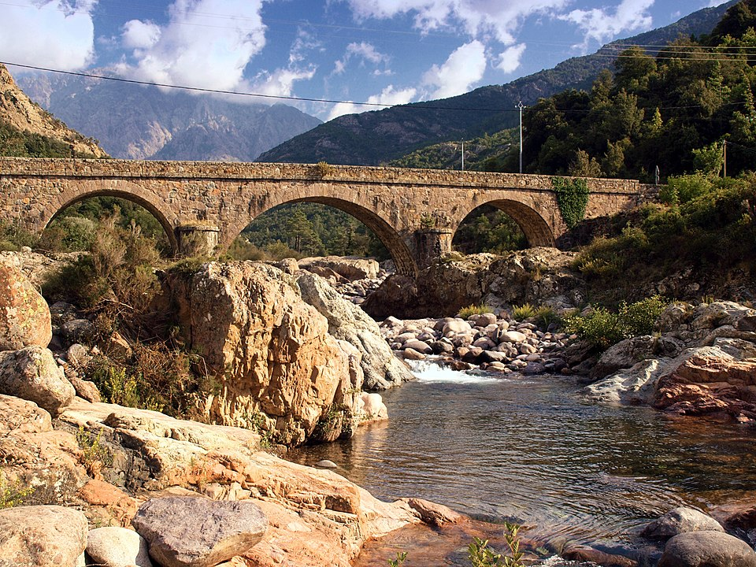

A Fango-völgy Korzika egyik legféltettebb és legfontosabb ökológiai kincse, amely egyedülálló biológiai sokszínűsége miatt méltán érdemelte ki az UNESCO bioszféra-rezervátum minősítést. A magas hegyekből alázúduló Fango folyó vize sok helyen olyan hihetetlenül átlátszó, mintha a látogató egy tiszta üveglapon keresztül tekintene a mélybe. A folyómedret alkotó ősi vörös gránit- és porfírkövek meleg, tüzes színvilágot kölcsönöznek a tájnak, miközben a mederben kialakuló természetes sziklamedencék (piscines naturelles) a nyári hónapokban frissítő, mégis vadregényes fürdőhelyként szolgálnak a természet szerelmeseinek.
A D81-es panorámaút felett elhelyezkedő kilátópont tökéletes „tájablakként" funkcionál, amely egy rövid megálló alkalmával is teljes képet ad a vidék monumentális geomorfológiájáról. Innen fentről a völgy mély és drámai formája, a folyó kanyarulatai, valamint az egészet borító, sűrű és illatos maquis (mediterrán bozót) zöldje kivételes tisztasággal olvasható. Ez a helyszín nem csupán egy egyszerű fotómegálló, hanem egy működő, élő ökoszisztéma mintapéldája, ahol a víz pusztító és építő ereje, az ősi kőzetformációk és a jellegzetes szigeti növényzet évszázadok óta tökéletes, harmonikus szimbiózisban dolgozik együtt.
A völgy növényvilága rendkívül karakteres, hiszen a folyóparti sávot hatalmas, matuzsálemi korú örökzöld tölgyesek és sűrű mediterrán cserjések kísérik végig. Az izzó vörös sziklák, a mélyzöld növénytakaró és a meder türkizkék vizének találkozása a korzikai nyugati part egyik leginkább fotogén és legdrámaiabb színkontrasztját eredményezi. A táj varázsa késő délután, a híd és a környező kilátópontok környékén éri el a csúcspontját, amikor az alacsonyan járó nap súroló fényei szinte izzóvá, tüzessé teszik a vörös kőtömböket, végleg kibontva a Fango-völgy megalkuvást nem tűrő, vad és monumentális karakterét.